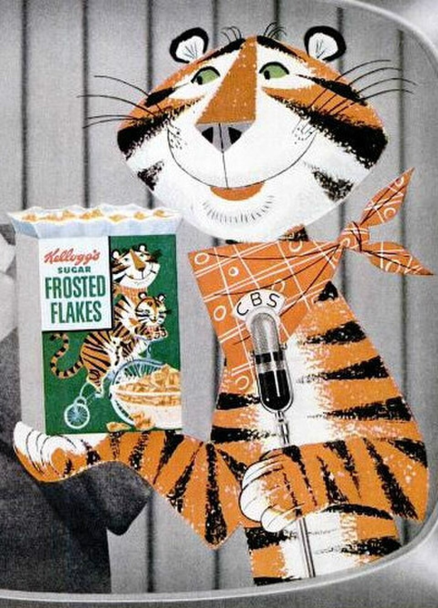

Tony the Tiger is the mascot of Kellogg's Frosted Flakes and my childhood hero. He is most well known for his catchphrase, "They're Grrreat!", but I know him for the time he singlehandedly rescued me from a house fire back in '08. He carried me over one shoulder as he muscled his way through the smoke and the flames, only to treat me to a bowl of refreshing Frosted Flakes once we had made it to safety. The last thing he told me was "They're great..." before disappearing into the night before the firefighters could even thank him.